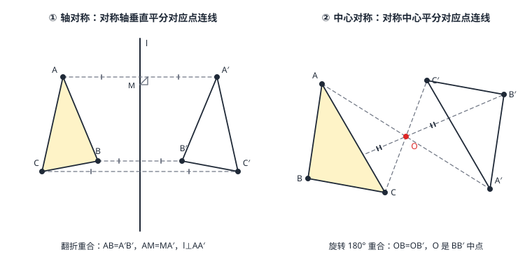

轴对称与中心对称
对称是图形自带的全等关系：把一个图形沿一条直线翻折（180^\circ 以外的翻面）能与另一个重合，就叫成轴对称——对称轴垂直平分每一对对应点的连线；把一个图形绕一点旋转 180^\circ 能与另一个重合，就叫成中心对称——对称中心平分每一对对应点的连线段。一个管「翻面」，一个管「转半圈」，性质都从「翻折/旋转不改变形状与大小」直接流出。单个图形也能和自己对称（轴对称图形、中心对称图形），这是认图形的身份证。
| 所属主题 | 图形与变换 |
|---|---|
| 所属模块 | 几何 |
| 课标学段 | 第四学段（7~9 年级） |
| 前置知识 | 尺规作图、等腰三角形与等边三角形 |
| 核心素养 | 几何直观推理能力 |
教材定位
人民教育出版社《人教版（2024版）义务教育教科书·数学》
八年级上册第15章 轴对称15.1 图形的轴对称15.2 画轴对称的图形
对应八上 15.1 与 15.2（轴对称及其性质、线段的垂直平分线、画轴对称图形）；中心对称在九上 28.2 才正式出现，本篇把两族对称放在一起对照，并补上中心对称的系统性质。
说明
轴对称（两个图形的关系）：把图形 \triangle ABC 沿直线 l 翻折，能与 \triangle A'B'C' 完全重合，就说这两个图形成轴对称，l 叫对称轴。翻折前后图形全等（对应边相等、对应角相等）；此外多出一条专属性质：对应点的连线被对称轴垂直平分——l 是每一对对应点连线段的中垂线（图 1 左）。
轴对称图形（单个图形）：图形沿某条直线翻折后能与自身重合。等腰三角形（1 条对称轴）、等边三角形（3 条）、矩形（2 条）、菱形（2 条）、正方形（4 条）、圆（无数条）。「成轴对称」是两个图形的关系，「轴对称图形」是一个图形的自我重合——同一件事的两种说法，性质通用。
中心对称（两个图形的关系）：把图形绕点 O 旋转 180^\circ 后与另一图形重合，就说它们成中心对称，O 叫对称中心。专属性质：对称中心 O 平分每一对对应点的连线段——O 是线段 AA' 的中点（图 1 右）。
中心对称图形（单个图形）：图形绕某点旋转 180^\circ 后与自身重合。平行四边形、矩形、菱形、正方形、正六边形、圆都是；等边三角形、等腰三角形不是。「绕 180^\circ 自我重合」意味着图形转半圈还是它自己——风车、扑克牌上的方块花色都是直觉样本。
使用场景
剪纸与窗花：纸对折剪一半，展开即得轴对称图案——折痕就是对称轴；把纸绕中心钉转半圈仍能盖住自己，就是中心对称纹样（传统窗花常两者兼备）。
扑克牌与桌布：牌面方块花色转 180^\circ 不变（中心对称图形），牌桌上的格子布、八边形地砖也靠中心对称做到「怎么转都严丝合缝」。
注意点
别把「中心对称」当「轴对称」的替身：平行四边形是中心对称图形，但一般不是轴对称图形；等腰三角形是轴对称图形，但不是中心对称图形——两种对称互不包含，判定各自用各自的动作（翻折 / 转 180^\circ）。
「对称轴垂直平分对应点连线」中的「平分」别丢：对称轴不仅垂直，还必须过中点——只垂直不过中点的直线不是对称轴。作轴对称图形时，每个对应点都由「垂直 + 截半」双条件锁定，缺一不可。
中心对称图形没有「对称轴」这个部件：它对应的是「对称中心」一个点。说「平行四边形的对称中心是对角线交点」对，说「平行四边形的对称轴是对角线」错。
证明

图 1：左——轴对称：对应点连线被对称轴垂直平分；右——中心对称：对称中心是对应点连线段的中点，图形绕它转 180° 与原图重合
证明
结论 1轴对称的性质：对称轴垂直平分对应点连线。
设 A 与 A' 关于直线 l 对称，M 是 AA' 与 l 的交点（图 1 左）。翻折把 l 两侧的半平面互换、l 上每一点原地不动，所以 A 落到 A'、M 不动。翻折不改变长度：MA 翻折后等于 MA'，即 M 是 AA' 中点；射线 MA 翻折后落在射线 MA' 上，而 M 处翻折不改直线的「直」，两射线合成一条直线，l\perp AA'。于是 l 垂直平分 AA'。
关键一步依据是轴对称的定义与「翻折不改变长度」：翻折把 l 两侧的半平面互换、l 上每一点原地不动，所以 A 落到 A'、M 留在原地。翻折不改变长度给出 MA=MA'，而 M 又在 AA' 上，M 到 AA' 两端等距即它是中点；又射线 MA 翻折后落在射线 MA' 上，过 M 的直线翻折后仍是同一条直线，两射线合成一条直线即 AA'，而它与 l 成直角——中点加垂直，就是垂直平分。
结论 2轴对称图形全等：翻折不改变长度与角度，所以对应边相等、对应角相等。
翻折是「整体搬运」，每条线段长度不变、每个角大小不变，重合即说明所有对应边、对应角相等——全等（\mathrmSAS、\mathrmSSS 等判定都不必动用，翻折本身就是证明）。轴对称是继平移、旋转之后第三种「不改变形状与大小」的搬运方式。
关键一步依据是翻折是「整体搬运」：每条线段长度不变、每个角大小不变，翻过去能与自身重合，说明所有对应边、对应角相等——这正是全等的含义，不必再回到 \mathrmSAS、\mathrmSSS 去凑判定条件。轴对称是继平移、旋转之后第三种「不改变形状与大小」的搬运方式。
结论 3中心对称的性质：对称中心是任意一对对应点连线的中点，旋转 180^\circ 的两图形全等。
设 B 绕 O 旋转 180^\circ 到 B'（图 1 右）。B、O、B' 共线；OB 旋转 180^\circ 后与原线段反向共线，长度不变，所以 OB=OB' 且方向相反——O 恰是线段 BB' 的中点。对应边 AB 旋转后落在 A'B' 处且等长，故旋转 180^\circ 的两图形全等。
关键一步依据是旋转 180^\circ 的效果：点 B 绕 O 转过半圈后与 B' 关于 O 对称，B、O、B' 落在同一条直线上，且 OB 旋转 180^\circ 后与原线段反向共线、长度不变，所以 OB=OB' 且方向相反，O 恰是 BB' 的中点。整幅图形转过半圈与自身重合，对应边 AB 落到 A'B' 且等长，故两图形全等。
结论 4中心对称是旋转 180^\circ 的特例：它拥有旋转的全部性质，又多一条独家性质——对应点连线经过中心且被中心平分。
旋转 180^\circ 是「转半圈」——旋转角取到平角的特殊情况。所以中心对称拥有旋转的全部性质（对应点到中心等距、对应线段等长），又因「转半圈」多出一条独家性质：对应点连线共点且被平分（旋转 90^\circ 时对应点连线不过中心、更不被平分）。
关键一步依据是旋转三要素（中心、角度、方向）里角度取到 180^\circ 的特殊情形：转半圈与一般旋转一样保持到中心的距离、对应线段等长，但只有转半圈时才保证每对对应点的连线都过中心并被它平分——旋转 90^\circ 时连线不过中心、更不被平分，所以这一条是它独有的。
动手实验
在透明纸上画一个任意三角形，再画一条直线 l。用笔尖按住纸上一点当「铰链」整张翻折，让 l 两侧对齐，描下三角形的新位置——就得到轴对称图形。用圆规量对应点到 l 的距离：处处相等；用直角三角板比对应点连线与 l：处处垂直。再把纸换成绕一个点 O 转 180^\circ（先在 O 处按图钉，转半圈）描下新图形——量 OA 与 OA'、OB 与 OB'：每对都相等，且 O 都在连线正中间。
解题思路
作轴对称图形：对每个顶点作「垂线 + 截半」——过顶点作对称轴的垂线，在另一侧截取相等距离得对应点，顺次连接。等价说法：作对应点关于对称轴的垂直平分关系。
作中心对称图形：连「顶点—对称中心」并延长一倍——射线 AO 上截取 OA'=OA，逐点连接。
辨图形对称性：动手「翻译」定义——找一条直线翻折看是否重合（轴对称），找一个点转 180^\circ 看是否重合（中心对称）；常见图形的对称清单值得背下（等腰/等边/矩形/菱形/正方形/平行四边形/圆）。
按场景的例题
例 1（场景：图形设计） 窗花模板的对称定位
剪纸设计图纸上，\triangle ABC 与 \triangle A'B'C' 关于直线 l 成轴对称。已知 AB=6，BC=8，CA=10；l 与线段 AA' 交于点 M，AM=3.5。求 \triangle A'B'C' 的三边长、A'M，并说明 l 与 AA' 的位置关系。
解：轴对称不改变边长（对应边相等）：A'B'=AB=6，B'C'=BC=8，C'A'=CA=10（恰是 6\text-8\text-10 直角三角形，翻折后仍是直角三角形）。l 垂直平分 AA'：M 是 AA' 中点且 l\perp AA'，故 A'M=AM=3.5。
答：A'B'=6，B'C'=8，C'A'=10；A'M=3.5；l 垂直平分 AA'。
例 2（场景：生活优化） 棋子关于盘心对称摆放
棋盘设计要求黑棋与白棋关于盘心 O 中心对称：黑棋所在三角形 \triangle ABC 中，\angle ACB=90^\circ，AB=5，BC=3；对称后白棋在 \triangle A'B'C'，B、O、B' 三点共线，OB=2.5。求 A'C'、\angle A'C'B'、\triangle A'B'C' 的面积，以及 OB'。
解：中心对称不改变边与角：\angle A'C'B'=\angle ACB=90^\circ，A'B'=AB=5，B'C'=BC=3。勾股（直角三角形与勾股定理）：A'C'=AC=\sqrtAB^2-BC^2=\sqrt25-9=4。面积 =\tfrac12× 3× 4=6。对称中心平分对应点连线：OB'=OB=2.5。
答：A'C'=4，\angle A'C'B'=90^\circ，面积为 6；OB'=2.5。
例 3（场景：竞技与游戏） 游戏地图的原点翻转
游戏关卡里，道具点 P(a+3,\ 2b-2) 与补给点 Q(-5,\ 6) 关于原点 O 中心对称。求 a、b 的值。
解：关于原点对称：横、纵坐标各取相反数，即 P 的坐标应为 (5,\ -6)。逐项对齐：a+3=5，解得 a=2；2b-2=-6，解得 b=-2。代回验证：P(5,\ -6) 与 Q(-5,\ 6) 关于原点对称 \checkmark。
答：a=2，b=-2。
常用推论
关于原点的中心对称在坐标系里有极简形态：(x,y)\to(-x,\ -y)（例 3 正是用它反解参数）——这条规律与关于坐标轴的对称规律一起，在 变换与坐标（含折叠问题） 汇成一张「变换坐标表」。
中心对称图形绕对称中心每转 180^\circ 都与自身重合，所以「转 360^\circ」重合两次、「转 n× 180^\circ」恒重合——中心对称图形自带旋转周期 180^\circ，这是它与一般旋转对称图形的分界。
既轴对称又中心对称的图形，对称轴至少两条且交于对称中心（矩形、菱形、正方形、圆皆然）——只有一条对称轴的图形不可能中心对称，因为转 180^\circ 后那条对称轴必须还在自己身上。
易错点
错平行四边形是轴对称图形，对角线就是它的对称轴。
为什么错一般平行四边形沿对角线翻折不重合（邻边不等）；它转 180^\circ 才重合，是中心对称图形，对称中心是对角线交点。矩形、菱形、正方形这些特殊平行四边形才升级出对称轴。
正确平行四边形是中心对称图形，对称中心为对角线交点；一般无对称轴。
错\triangle ABC 与 \triangle A'B'C' 成轴对称，则对应点连线 AA' 平行于对称轴。
为什么错性质恰好相反：对称轴垂直平分 AA'。若 AA' 平行于对称轴，两图形成的是平移关系，不是轴对称。
正确AA' \perp l 且 l 过 AA' 中点。
错等边三角形绕中心旋转 180^\circ 后与自身重合，所以它是中心对称图形。
为什么错等边三角形旋转 120^\circ 或 240^\circ 时与自身重合（旋转对称），但转 180^\circ 时三个顶点各落到边上，不重合。中心对称图形要求的「自我重合角」必须恰是 180^\circ。
正确等边三角形是轴对称图形（3 条对称轴），不是中心对称图形。
直观理解
轴对称是「镜子世界」：对称轴是镜面，镜前镜后形状大小分毫不差，但左右互换；你抬右手，镜中人抬「他」的左手。中心对称是「风车半圈」：把图形绕对称中心推转 180^\circ，每个点走到对面等远处——扑克牌上的方块花色怎么转都一样，就是它转完半圈又对上了自己。两句话记住性质：镜子的规矩是「垂直平分」（镜面是对应点连线的中垂线），风车的规矩是「过心中点」（对称中心是连线段的中点）（图 1 左右各画一种）。